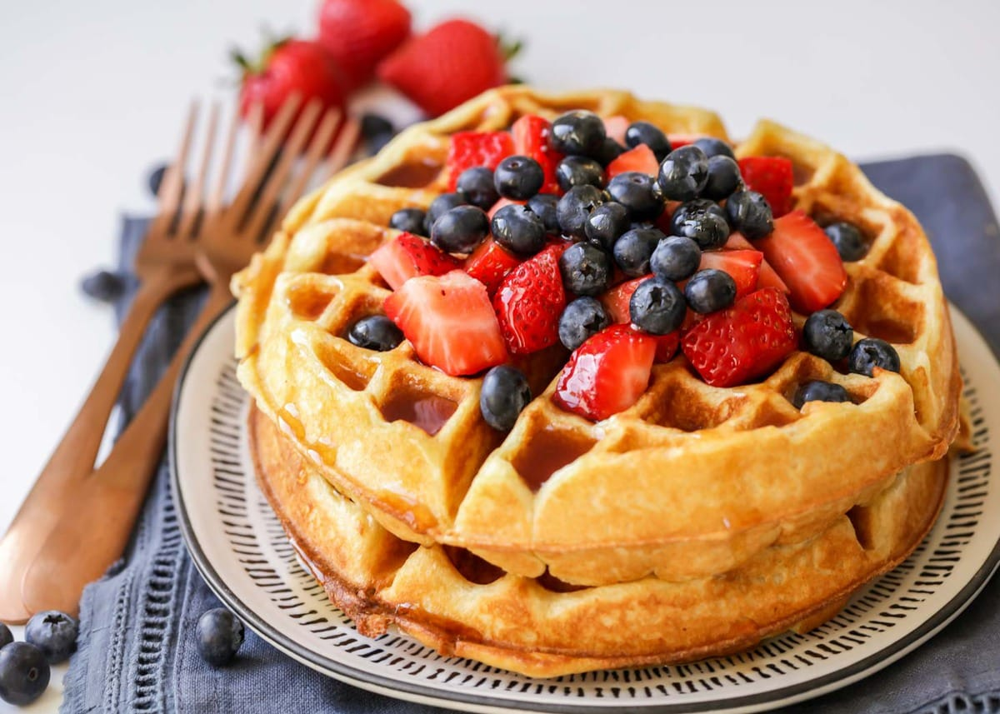

Tender and Easy Buttermilk Waffles

Description
What is better than a big, fluffy waffle first thing in the morning? Almost nothing! These buttermilk waffles are your new favorite breakfast recipe—everyone will love them!
Ingredients
Dry Ingredients:
- Flour
- Sugar
- Baking powder
- Baking soda
- Salt
Wet ingredients:
- Buttermilk
- Melted butter
- Eggs
- Vanilla
Steps
- Combine the dry ingredients into the wet ingredients by whisking.
- Grease and heat up your waffle iron.
- Pour batter into waffle iron.
- Cook according to your waffle iron.